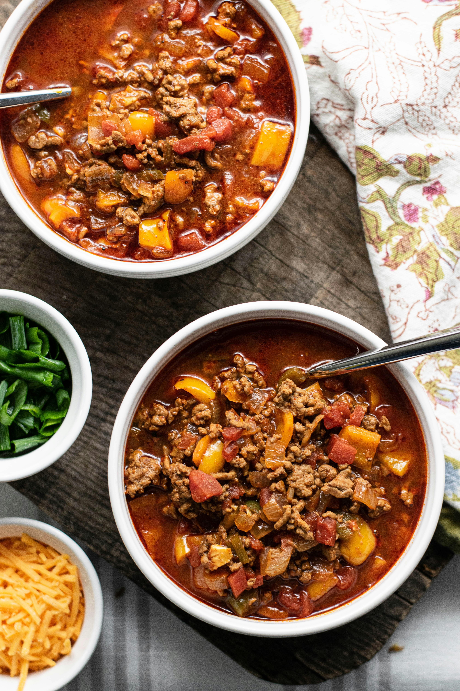

Chili

Description
This easy to make chili goes great with corn chips or cornbread.
Ingredients
- 1 Pound Ground Beef
- 1 Chopped Onion
- 1 Can Tomato Sauce (15 ounce)
- 1 Can Stewed Tomatoes (14.5 ounce)
- 1 Can Kidney Beans (15 ounce)
- 1 Teaspoon Chili Powder
- 1 Pinch Garlic Powder
- Salt
- Black Pepper
- 1 and a Half Cups Water(optional)
Steps
- Place ground beef and onion in a large saucepan over medium heat; cook and stir until meat is browned and onion is tender, about 5 to 7 minutes.
- Stir in tomato sauce, kidney beans, and stewed tomatoes with juice. If you prefer a thinner consistency, you can add water. Season with chili powder, garlic powder, salt, and black pepper. Bring to a boil, reduce heat to low, cover and let simmer for 15 minutes.
Home